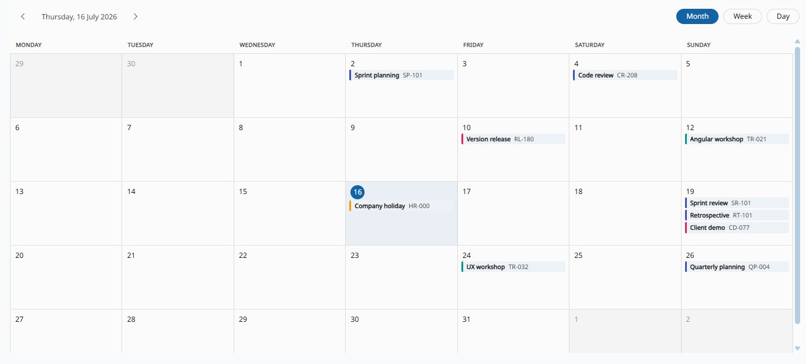
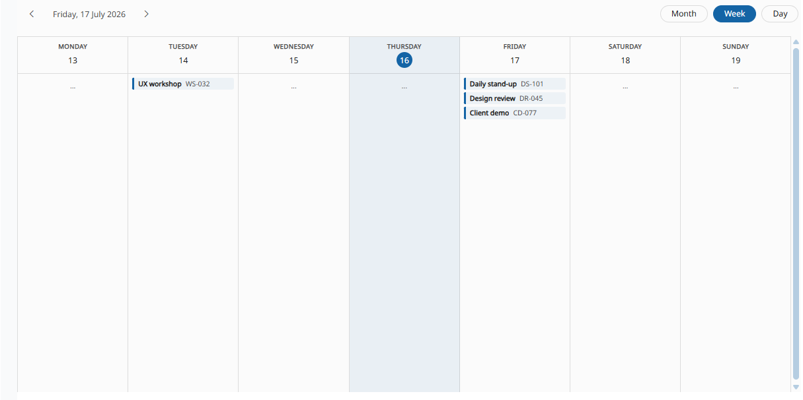
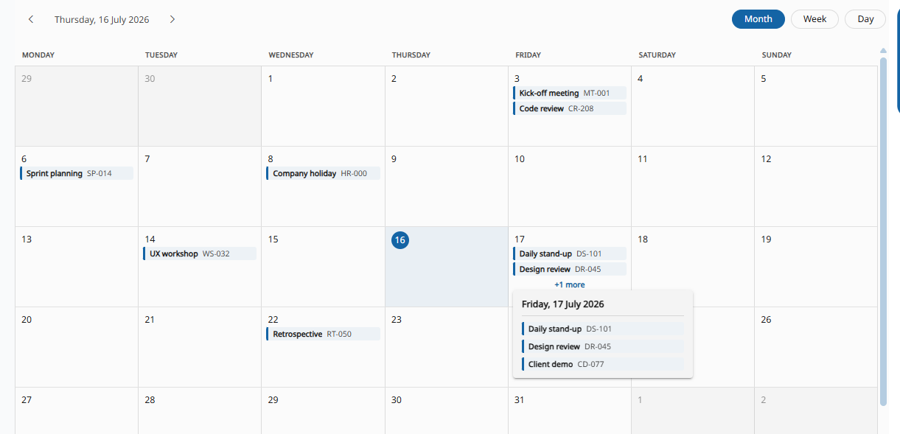
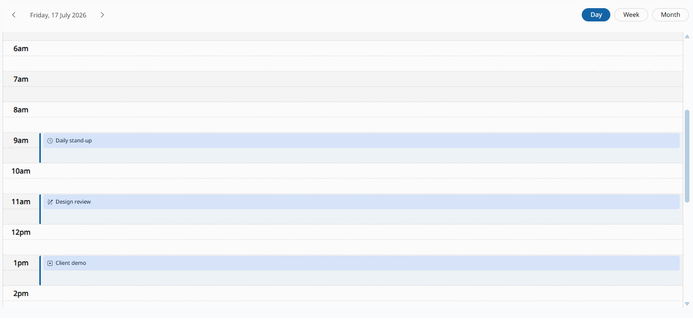

Calendar
This component is available since version 18.0.0-next.2.
Introduction
The o-calendar component displays a data set as events over a month, week or day grid. It wraps angular-calendar with a moment-based date adapter and date formatter, and adopts the Material 3 tokens used across the rest of the Ontimize Web components, so it looks consistent in both light and dark themes without extra setup.

Data binding
Like the rest of the Ontimize Web service components, o-calendar supports both local and remote data:
- Provide an array of objects to the
static-dataattribute. - Configure the component to query the data from a service using
service(orservice-type) andentity.
Every row is mapped into an angular-calendar CalendarEvent using the *-column inputs:
start-column(required, unlessmap-functionis used): event start date/datetime.end-column: event end date/datetime.title-column: event title, shown in bold in the default event pill.description-column: secondary/muted text, shown in the default event pill and in the tooltip.color-column: accent color for the event (pill border, custom event wrapper).all-day-column: flags the event as an all-day event.
Server-side range filtering
When bound to a service/entity, o-calendar automatically restricts the query to the events overlapping the range actually rendered by the active view:
- Month: the full week-padded month grid (from the start of the week containing the 1st, to the end of the week containing the last day).
- Week: the 7 days of the visible week.
- Day: the visible day.
The filter is built from start-column (and end-column, if set) using the same overlap test angular-calendar itself uses to place events on the grid (event.start before the range end, event.end — or event.start when there is no end-column — after the range start), so the backend only ever returns what the calendar is about to draw. Navigating (previous/next, switching view, or picking a date from the toolbar date picker) re-issues the query with the new range.
This only applies in service/entity mode with column mapping; it is skipped for static-data and when a map-function is used (there is no known column to filter on).
The range boundaries are converted to value-type before being sent, so they compare correctly against whatever wire format start-column/end-column are actually stored in: timestamp (epoch ms, the default — matching o-date-input/o-table’s own date filters), iso-8601, date (a JS Date) or string (formatted with value-format, a moment format, default L).
Custom mapping
When the *-column inputs are not flexible enough (e.g. the event color depends on more than one field, or the title needs formatting), provide a map-function instead. It takes precedence over every *-column input and is responsible for building the whole CalendarEvent:
mapRow = (row: any): CalendarEvent => ({
start: new Date(row.start),
end: new Date(row.end),
title: `${row.title} (${row.code})`,
color: { primary: row.color, secondary: row.color },
meta: row
});
<o-calendar [static-data]="staticData" columns="id;title;code;start;end;color" keys="id" [map-function]="mapRow"></o-calendar>
Whichever mapping mode you use, the original row is always kept in
event.meta, so custom templates and output payloads can reach it.
Views
o-calendar supports three views, controlled by the view input: month, week and day.
views:;-separated list of the views available in the toolbar switch (e.g.views="month;week"). Defaults to all three.week-starts-on: first day of the week (0= Sunday …6= Saturday). When not set, it falls back to the first day of the current moment locale (Monday fores, Sunday foren).week-header-day-format: moment format applied to the value shown under the weekday name in the week/day column headers. Defaults toD(day number only); use e.g.MMM Dto also show the month abbreviation. BothDandMMM Dtranslate automatically (backed byIntl.DateTimeFormat); any other, free-form moment token still works but — like any direct moment usage — needs the correspondingimport 'moment/locale/xx'in the app for its locale-dependent parts (month/weekday names) to translate.locale: BCP 47 locale used to format the toolbar title, the column headers and the date picker. Defaults to the current application language and keeps following it as it changes, unless explicitly bound.show-weekends: shows Saturday/Sunday columns in the month and week views (and in the week agenda list, see below).
Toolbar
The toolbar (hidden with show-toolbar="no") shows the previous/next navigation, the current period as a clickable title, and the view switch (when more than one view is available via views). The title uses a brief format in day view (e.g. “Wed, 8 May 2026”) and the full weekday/month names in month and week view (e.g. “Friday, 8 May 2026”).
Jump to any date
Clicking the toolbar title opens a Material date picker (mat-calendar) that lets the user jump to any day, month or year without having to page through the calendar one step at a time.
Loading state
While a service/entity query is in flight, the active view’s content is replaced by a loading skeleton (ngx-skeleton-loader) shaped like that view: a 7-column grid for month, one column per visible day for week, a single column for day — both in the hourly grid and the agenda (show-hours="no") layouts. The toolbar stays visible and usable throughout. Not shown in static-data mode, since there is no query to wait for.
Agenda mode (show-hours="no")
The week and day views normally render an hour-by-hour grid. When events are all-day (or the time of day is not relevant), set show-hours="no" to replace that grid with an agenda-style list of event cards instead:
- Week: one column per visible day (respecting
show-weekends), each with its own header (weekday + day number, today highlighted) and a scrollable list of that day’s events. - Day: the same event list, for the single visible day.
Both reuse the same event pill / custom oCalendarEvent template and tooltip as every other view, and clicking an event re-emits onEventClick as usual.
The day view always shows a header with the weekday and day number (today highlighted), regardless of show-hours — above the hourly grid when show-hours="yes", or above the agenda list when show-hours="no".
A day with no events shows empty-cell-text (defaults to ···) in place of the list; set it to '' to show nothing.

“+N more” day popover
In month view, the number of event pills rendered per cell is capped by max-events-per-month-cell (default 3). When a day has more events than that, a +N more link is shown; clicking it opens a popover listing every event of that day, reusing the same event pill (or the custom oCalendarEvent template, if provided) and tooltip. The popover is anchored to the clicked link and the CDK overlay automatically flips it to whichever side (right, left, top or bottom) fits the viewport, instead of a centered modal. Clicking an event inside it closes the popover and re-emits onEventClick, exactly as clicking the event directly on the grid would.
Set more-clickable="no" to render +N more as a static, non-interactive label instead — no popover, no click handling.

Tooltips
Hovering an event shows a tooltip with its title and description. Set show-tooltip="no" to disable it, or provide a custom oCalendarTooltip template (see below) to control what it shows.
For a lighter-weight override that doesn’t require a full template, use tooltip-function — a (row: any) => string that computes the tooltip text from the event’s source row, the same convention o-table-column uses for its own tooltip-function input:
<o-calendar ... [tooltip-function]="getEventTooltip"></o-calendar>
getEventTooltip = (row: any): string => `${row.title} — Room ${row.room}`;
tooltip-function is ignored when a custom oCalendarTooltip template is provided, since the template replaces the tooltip’s markup entirely.
Templates
The o-calendar component uses content projection to let you fully customize how an event is rendered, in every view (month, week, day and the “+N more” popover).
Custom event template
Define an ng-template with the oCalendarEvent directive to replace the default event pill. The template receives the CalendarEvent as $implicit and the original data row as row:
<o-calendar ...>
<ng-template oCalendarEvent let-event let-row="row">
<div class="my-event-chip">
<mat-icon></mat-icon>
<span></span>
</div>
</ng-template>
</o-calendar>

The template’s content is wrapped in the same
o-cal-event-pillbackground and event-colored left border as the default pill (fromcolor-column, falling back to the theme’s primary color), so the template itself only needs to define what goes inside — an icon, a title, whatever — not its own background or border.
Custom tooltip template
Define an ng-template with the oCalendarTooltip directive to replace the default tooltip content. Same context as the event template ($implicit = CalendarEvent, row = source row):
<o-calendar ...>
<ng-template oCalendarTooltip let-event let-row="row">
<strong></strong>
<div></div>
</ng-template>
</o-calendar>
Both templates are optional.
oCalendarEventfalls back to the default event pill (title + description) andoCalendarTooltipfalls back to the default tooltip (title and description) when not provided.
Basic example
<o-calendar attr="calendar" [static-data]="staticData" columns="id;title;code;start;end;allDay" keys="id"
start-column="start" end-column="end" title-column="title" description-column="code" all-day-column="allDay"
view="month" (onEventClick)="onEventClick($event)" (onDayClick)="onDayClick($event)">
</o-calendar>
staticData = [
{ id: 1, title: 'Kick-off meeting', code: 'MT-001', start: new Date(2026, 6, 3, 9), end: new Date(2026, 6, 3, 10), allDay: false },
{ id: 2, title: 'Company holiday', code: 'HR-000', start: new Date(2026, 6, 8), allDay: true }
];
onEventClick(evt: OCalendarEventClick): void {
console.log(evt.event.title, evt.row);
}
onDayClick(evt: OCalendarDayClick): void {
console.log(evt.date, evt.events.length);
}
Demo
You can see this and more examples of this component in the OntimizeWeb playground.